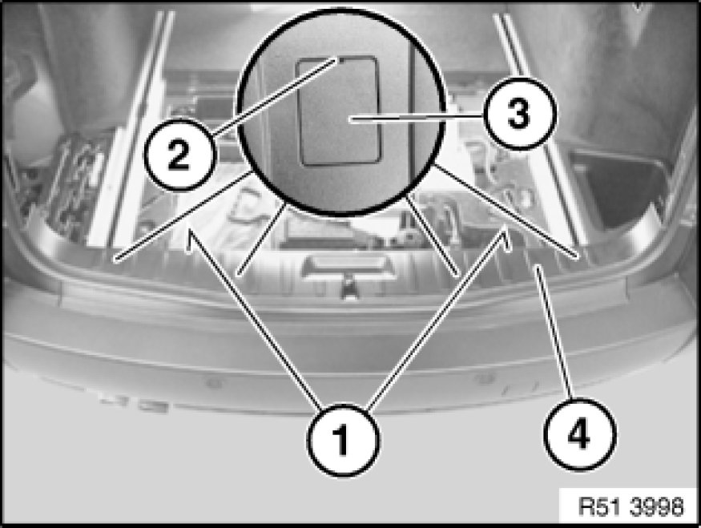

51 46 050 Removing and Installing/Replacing Top Trim on Rear Apron
51 46 050 - Removing and installing/replacing top trim on rear apron

Necessary preliminary tasks:
- Remove luggage compartment floor trim 51 47 101 Removing and Installing/Replacing Luggage Compartment Floor Trim Panel (luggage compartment mat)
- Remove both trims for roof pillars at rear Pillar Trim (D-pillar)

Release screws (1).
Lever out protective caps (3) at openings (2), remove and release screws underneath.
Lever out trim (4) inwards/upwards.
Installation:
If necessary, replace damaged protective caps (3).